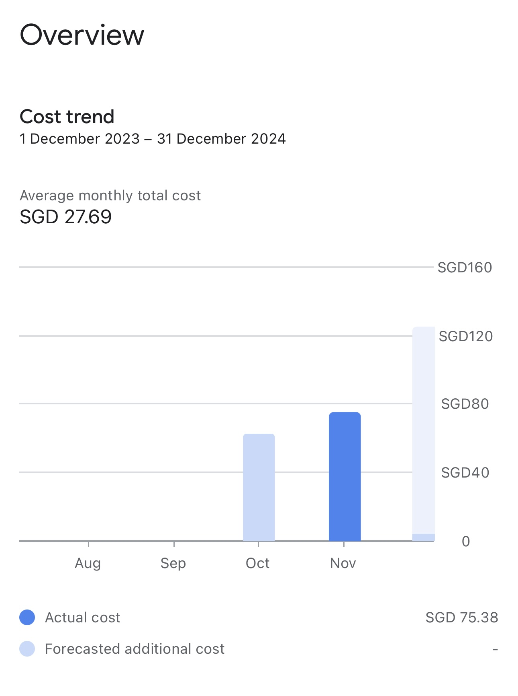

मेरे क्लाउड बिल्स पर एक नज़रांदा निकालना | मूल, AI द्वारा अनुवादित
GCP
मैंने कुछ वैश्विक CLOUD प्लैटॉर्म्स के नाम का एक लेख लिखा है (./cloud-platforms-en). पिछले कुछ महिनों में, मैं बहुत अनुभव प्राप्त कर पाया हूँ Google Cloud के साथ।
मुझे एक प्रॉक्सी सर्वर की आवश्यकता थी जो एक VPN के रूप में उपयोग किया जा सके ताकि निर्देशित नेटवर्क्स को जो चीनी फायरवॉल द्वारा ब्लॉक किए गए हैं, उनके साथ जोड़ सकें। मैं पहले Google Cloud का परीक्षण नहीं कर चुका था, इसलिए मैं इसे परीक्षण करने का फैसला कर लिया। आप OCBC क्रेडिट कार्ड का उपयोग करके $200 की क्रेडिट्स प्राप्त कर सकते हैं। कई कारणों से, कुछ समय आपकी खर्च क्रेडिट्स के खिलाफ़ गिनते नहीं होते, बल्कि वास्तविक खर्च के रूप में गिनते होते हैं।
पिछले माह में, मैंने करीब 75 SGD Google Cloud पर खर्च किए। यह बस एक कম्प्जूट इंजन इंस्टेंस (1 vCPU, 1 10GB डिस्क, जुरोंग वेस्ट, सिंगापुर) के लिए था।
मैंने दीजिटल ओशन का कई वर्ष से उपयोग किया है। यह बहुत सस्ता है। एक ड्रोपलेट (1 vCPU, 1GB मेमोरी, 25GB SSD, सिंगापुर) के लिए महीने में सिर्फ़ 6 USD लगता है।
हालाँकि, Google Cloud की कीमत कैल्कुलेटर का उपयोग करके, मैं समझा कि समस्या शायद अउटलाइन के साथ है। मैंने अउटलाइन मैनेजर का उपयोग करके प्रॉक्सी सर्वर सेट किया था।
मशीन टाइप एक महत्वपूर्ण अंग है। मैं इसपर और जांच करनी होगी।
अपडेट:
एक e2-माइक्रो इंस्टेंस (2 vCPU, 1 GB मेमोरी, 10 GB डिस्क) सिंगापुर में महीने में सिर्फ़ 7.98 SGD लगता है। अउटलाइन मैनेजर अच्छा काम करता है। मुझे 75 SGD गाड़ गए क्योंकि मुझे समय पर 4 या 5 सर्वर सेट करना पड़ा। बाद में, मैं समझ गया कि खर्च क्रेडिट्स से कम किए नहीं हो रहे थे। किन्तु जब मैं सर्वरों को रोक दिया, तो बिल पर रुक गए थे, जो मुझे पैसा खोद गए।
अन्यथा, वर्तमान मशीन टाइप को और समय के साथ-साथ मशीन बनावना पृष्ठ पर मशीन टाइप और इलाके को मानुअल रूप से दबारा सेलेक्ट करने की ज़रूरत न करके, आप समय बचाने के लिए सेमलर बटन “सिमलर बनाएँ” का उपयोग करके उस मशीन के लिए महीने की लागत देख सकते हैं।
 स्रोत: cloud.google.com
अपडेट: जनवरी 2025
उच्च लागत शायद नेटवर्क डेटा ट्रांसफर फीस के कारण हो गई थी।
सिंगापुर से चीन को नेटवर्क डेटा ट्रांसफर करने से करीब 19GB डेटा के लिए करीब $5.81 USD लगता है।
 स्रोत: cloud.google.com
स्रोत: cloud.google.com
AWS
जब मैं Databricks (https://www.databricks.com) का परीक्षण कर रहा था, तो यह कुछ AWS में रिसोर्स बनाता था जिन्हें मैं ट्रैक नहीं कर रहा था। एक हफ्ते के बाद, यह मुझे करीब $12 USD लगा। यह अभिभवनकारी थी क्योंकि मैं पहले इन खर्चों की जानकारी नहीं कर लिया था। इस खर्च में शामिल रिसोर्स एक NAT Gateway था दक्षिण पूर्व इलाके में।
 स्रोत: aws.amazon.com
स्रोत: aws.amazon.com